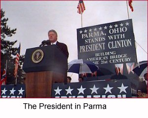

On the Horizon


As we head into the final days
of the campaign, we need your help
energizing your community to
GET OUT THE VOTE!Call the Clinton/Gore office number
below to volunteer.Ohio Highlights
November 4 - The President in Cleveland
October 29 - The President in Columbus
October 21 - The President in Parma
October 10 - The President in Dayton
September 16 - Cincinnati
President Clinton Receives
the Endorsement of the
Fraternal Order of PoliceAugust 25-26 - 21st Century Express
Chillicothe Columbus Arlington Bowling Green Toledo Cincinnati resident Elizabeth Carey
tells us why she supports the President
in the 4th edition of America's Home PageUpper Arlington resident Robert Farmer
in the 5th edition of America's Home PageOhio volunteer Chuck Ardo
is profiled as a Volunteer of the WeekClinton-Gore '96 Headquarters
555 South Front Street
Columbus, OH 43215Phone: 614-280-1996
Fax: 614-228-3938
State Director: Maurice Daniel
Ohio Democratic Coordinated Campaign
37 West Broad Street
Suite 430
Columbus, OH 43215Phone: 614-221-6563
Fax: 614-228-3938
The Coordinated Campaign is a distinct entity, directed by the Democratic National Party and the State Democratic Parties, and designed to elect Democrats to all levels of office.
Paid for by Clinton/Gore ’96 General Election Committee, Inc.